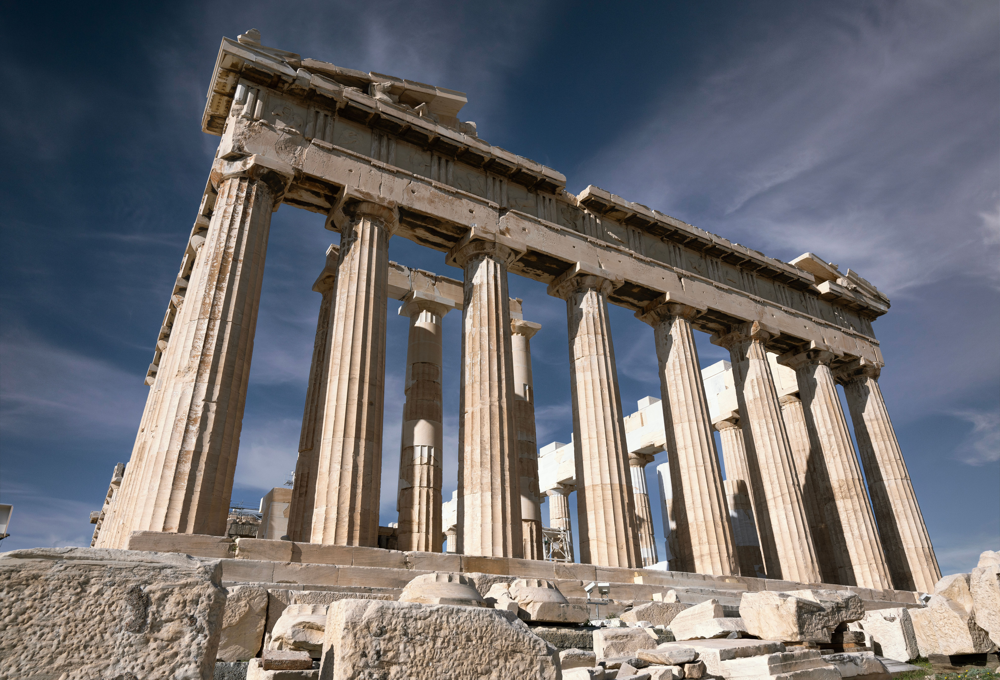
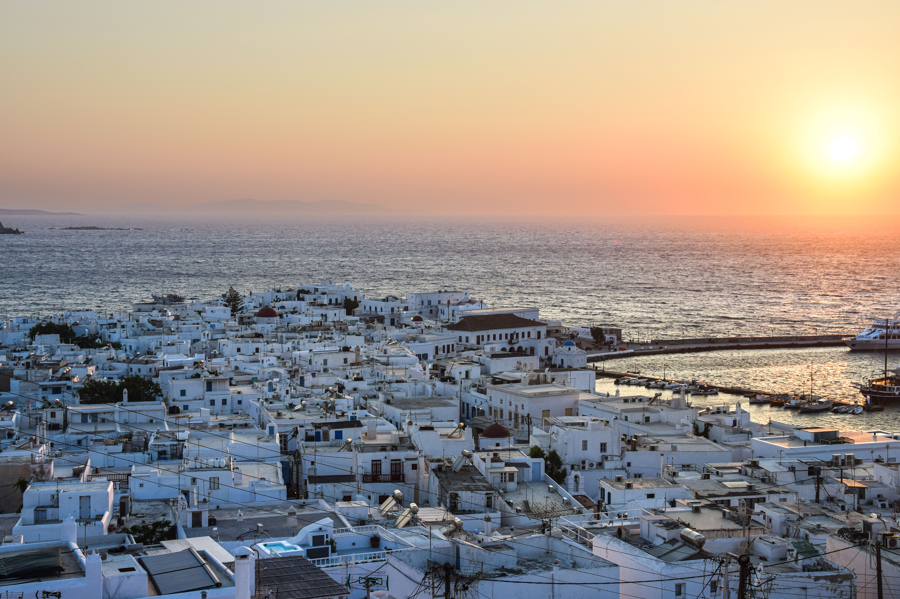
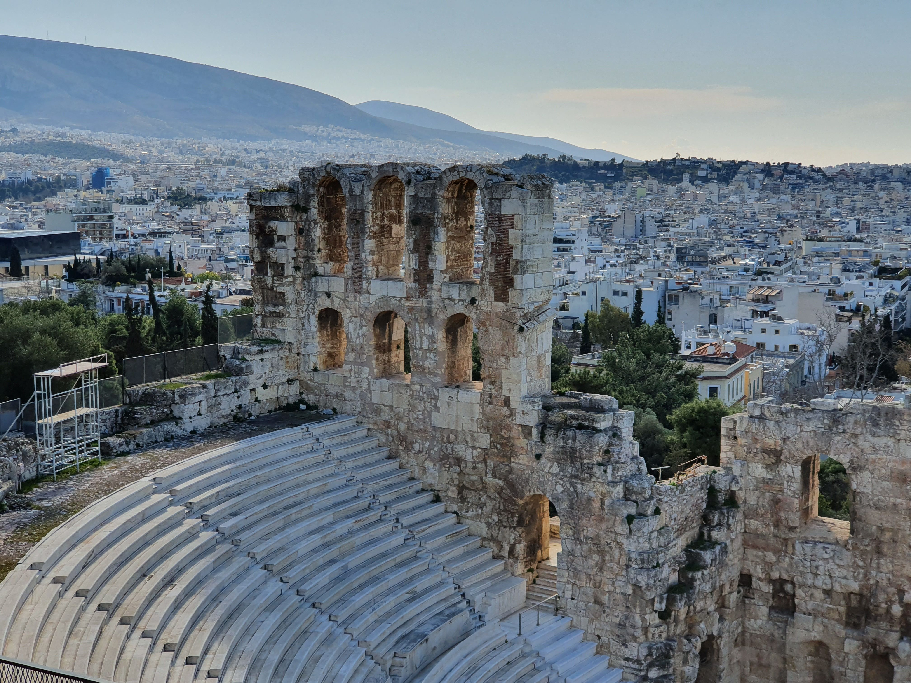

Commencez votre séjour à Athènes par une plongée dans l'histoire antique. Découvrez l'Acropole et son célèbre Parthénon avant de parcourir les ruelles animées du quartier de Plaka. La journée se termine par une promenade dans le centre historique pour profiter de l'atmosphère unique de la capitale grecque.

Envolez-vous vers Santorin pour découvrir l'une des îles les plus emblématiques de la Méditerranée. Explorez les ruelles blanches d'Oia et admirez les célèbres maisons aux coupoles bleues. En fin de journée, installez-vous face à la mer Égée pour admirer le magnifique coucher de soleil.

Partez à la découverte de Mykonos, célèbre pour ses maisons blanchies à la chaux et ses moulins traditionnels. Flânez dans les petites rues de Chora, découvrez la Petite Venise et profitez d'un moment de détente au bord de la mer dans l'une des plus belles plages de l'île.

Retour à Athènes pour profiter d'une dernière journée dans la capitale. Découvrez le marché de Monastiraki, goûtez aux spécialités grecques et profitez d'un dernier moment dans les rues animées de la ville avant votre départ.
| Option de Séjour | Hébergement (Hôtels 4★) | Inclus | Prix / Pers. |
|---|---|---|---|
| Pack Évasion | Hôtels 4★ (Charme & Confort) | Vols + Transferts + Petit-déjeuner | 16 900 MAD |
| Pack Signature | Hôtels 4★ Sup (Vue Mer) | Demi-pension + Guides + Activités | 23 900 MAD |
| Pack Excellence | Hôtels 5★ (Suites Vue Mer) | Pension Complète + Chauffeur Privé + Conciergerie VIP 24/7 | 32 900 MAD |